Commercial remodeling contractors in Massachusetts
Commercial remodeling contractors for offices, retail and restaurants
Commercial remodeling contractors at DeFaria Construction plan and build tenant fit-outs, office and retail build-outs and restaurant interiors across Essex and Middlesex County, with a clear scope, a fixed written price and a schedule built around your business.
Our work
A real DeFaria commercial build-out
From open ceilings and new framing to finished custom carpentry: a real commercial interior built by our crew.
Get a Free Estimate
The short answer
What do commercial remodeling contractors handle?
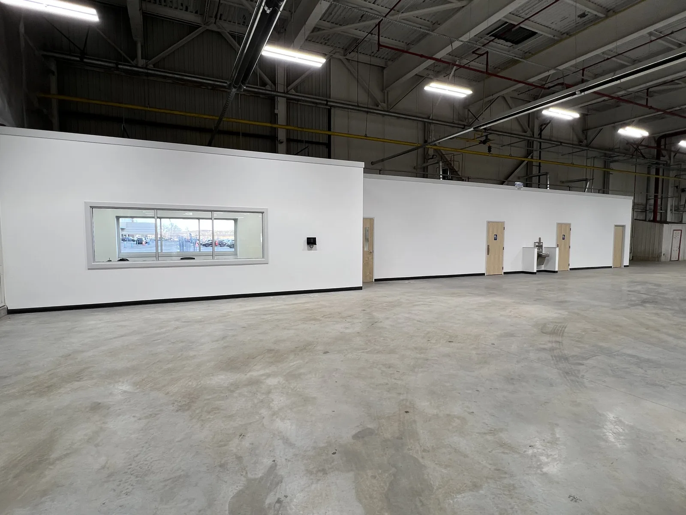
Commercial remodeling contractors turn an empty, dated or badly laid out business space into one that works for customers and staff. For most small and mid-size businesses on the North Shore that means a tenant fit-out after signing a lease, a refresh of a space that looks tired, or a new layout because the business grew.
- Tenant fit-outs and build-outs of leased shells.
- Office build-outs: private offices, conference rooms, glass partitions, break rooms.
- Retail build-outs: sales floor, fitting rooms, counters and display walls.
- Restaurant and bar dining rooms: booths, millwork, ceilings and finishes.
- Warehouse and shop offices built inside larger buildings.
- Restroom upgrades, doors, ceilings, paint and flooring refreshes.
DeFaria Construction is a hands-on remodeling company. Our own crew frames, hangs drywall, builds ceilings and does the finish carpentry, and licensed electricians and plumbers handle their parts of the work under the same schedule.
Cost
How much does a commercial remodel cost in Massachusetts in 2026?
These are typical 2026 ranges for interior commercial work in Essex and Middlesex County. They are planning numbers, not a quote: the final price comes in a written estimate after we walk the space and review any drawings.
| Project type | Typical 2026 range | What moves it |
|---|---|---|
| Cosmetic refresh (paint, flooring, lighting) | $10 to $30 per sq ft | Ceiling height, after-hours work, finish level |
| Office fit-out (walls, doors, ceilings, finishes) | $45 to $120 per sq ft | Number of rooms, glass, HVAC and electrical changes |
| Retail build-out | $60 to $150 per sq ft | Millwork, storefront, lighting design |
| Restaurant dining room or bar | $100 to $250+ per sq ft | Booths and millwork, plumbing, fire protection |
| Break room or kitchenette | $12,000 to $40,000 | Cabinets, sink and plumbing runs, appliances |
| Accessible restroom upgrade | $15,000 to $45,000 | Moving plumbing, size of the room, fixtures |
Kitchen equipment, signage, furniture, IT cabling and landlord work are usually priced separately. We list what is in and what is out, line by line, so you can compare bids fairly.
Tenant fit-outs
Tenant fit-out and build-out: from lease to opening day
A tenant fit-out starts before the lease is signed. The lease decides who pays for what, how much the landlord contributes as a tenant improvement allowance, and what rules apply to contractors in the building. A walkthrough at that stage helps you know what the space really costs before you commit.
- We walk the space with you and note what can stay and what must change.
- We price from your architect's drawings, or help you scope a simpler job that may not need full drawings.
- We follow the landlord's insurance, hours and work rules.
- We work toward a clear target date for your opening or move-in.
The goal is simple: the space is ready on the day your business needs it, without surprises in the last two weeks.
Real DeFaria work
A warehouse office build-out, start to finish
Photos from a real DeFaria commercial job: new walls framed inside a warehouse, then drywall, paint, doors, an interior window and a finished break room.
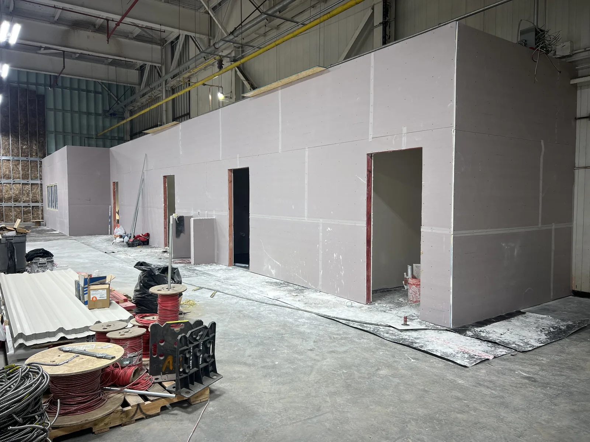
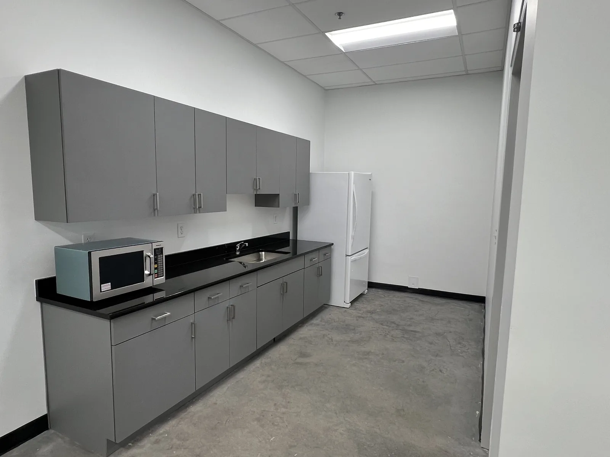
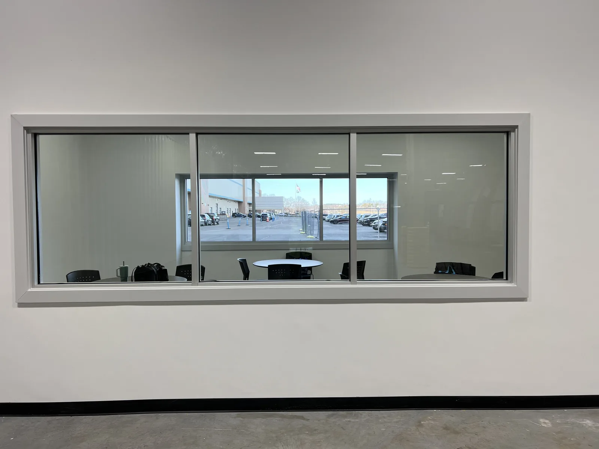
Real DeFaria work
A restaurant dining room, during and after
A real DeFaria restaurant project: custom wood arches, wall paneling, banquettes and lighting, built on site and finished for opening.
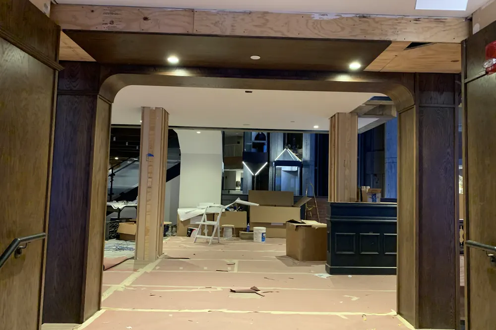
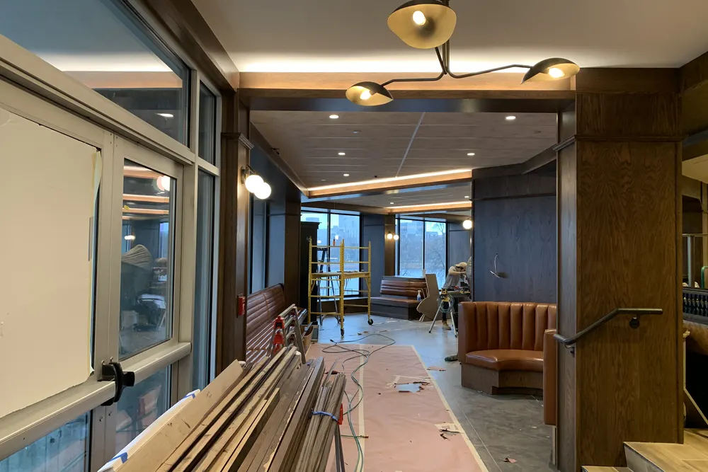
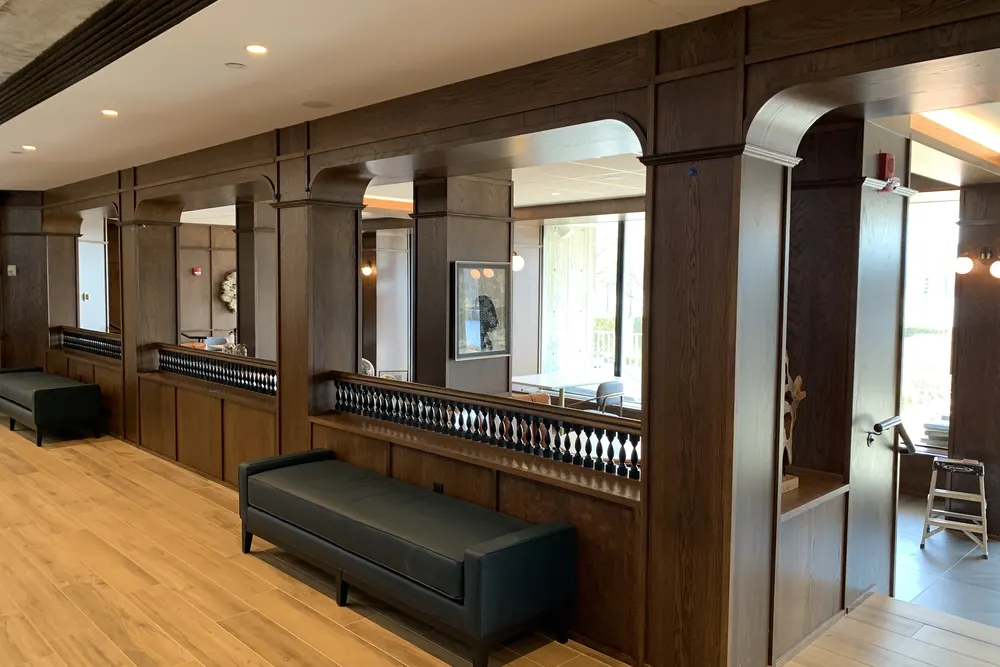
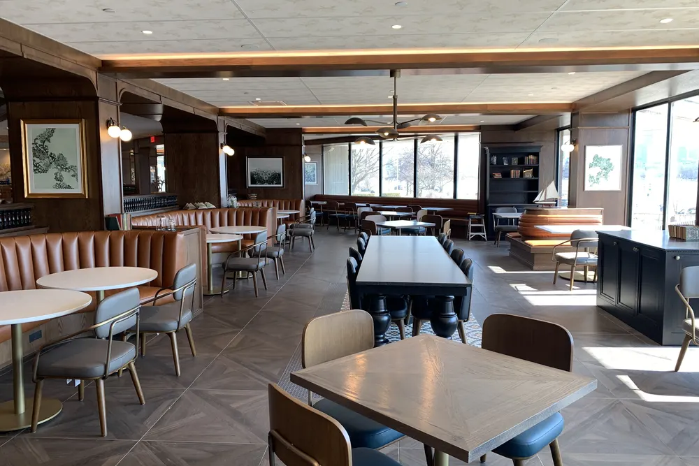
Offices
Office build-outs that fit the way your team works
Office projects are about layout. Private offices, a conference room, an open work area, storage and a break room all compete for the same square feet, and the walls, doors and lighting follow from those decisions.
- Framed walls with sound insulation where privacy matters.
- Interior windows and glass to share daylight.
- Suspended or drywall ceilings and new lighting.
- Break rooms with cabinets, counters and a sink.
- Durable paint, base and flooring for heavy daily use.
Warehouse and shop owners often need a few offices built inside a larger open building. That is exactly the kind of project shown in the photos on this page.
Retail and restaurants
Retail and restaurant build-outs

Customer-facing spaces are judged on looks and durability. A retail floor needs display walls, counters and lighting that sell the product; a restaurant dining room needs booths, millwork and finishes that survive daily cleaning and still look good.
- Custom counters, shelving and display walls.
- Booths, banquettes, wood wall panels and trim.
- Ceiling details and lighting that set the mood.
- Durable flooring and wall finishes that clean easily.
- Coordination with your kitchen equipment supplier and sign company.
Our custom finish carpentry team builds the millwork on site, so details match the room.
Process
Our commercial project process, step by step
- Walkthrough: we see the space, hear the goals, the budget and the deadline.
- Scope and drawings: we review your architect's plans or help define a simpler scope.
- Written estimate: a fixed price with inclusions, exclusions and a schedule.
- Permits and approvals: building, electrical, plumbing and any landlord approvals.
- Build phase: framing, rough electrical and plumbing, inspections, insulation, drywall, ceilings.
- Finishes: doors, trim, millwork, paint, flooring and fixtures.
- Final inspections and punch list: sign-offs, cleanup and a walkthrough with you.
You get regular updates from Luiz, so you always know what is done, what is next and whether anything needs a decision from you.
Real DeFaria work
A large commercial build-out in Framingham, MA
Steel stud framing, drywall partitions and finished walls inside a large commercial facility in Framingham, built by our crew.
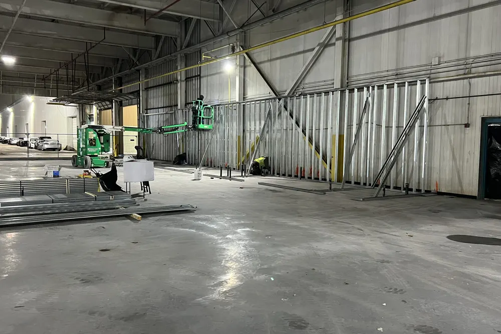
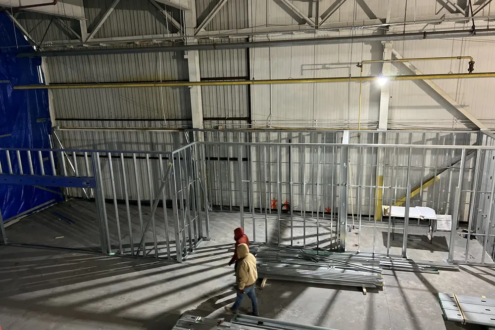
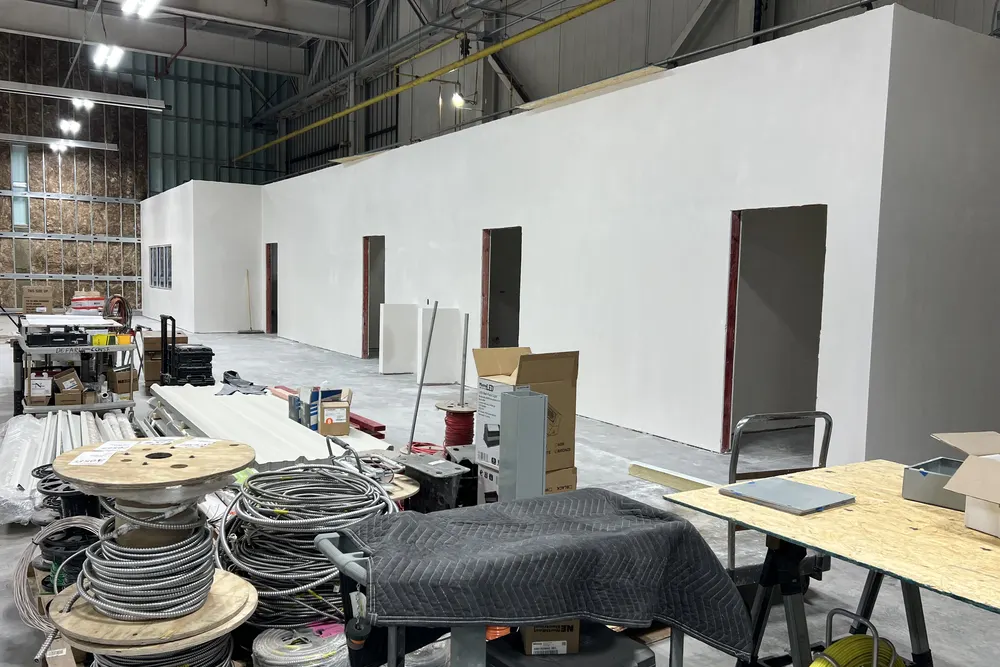
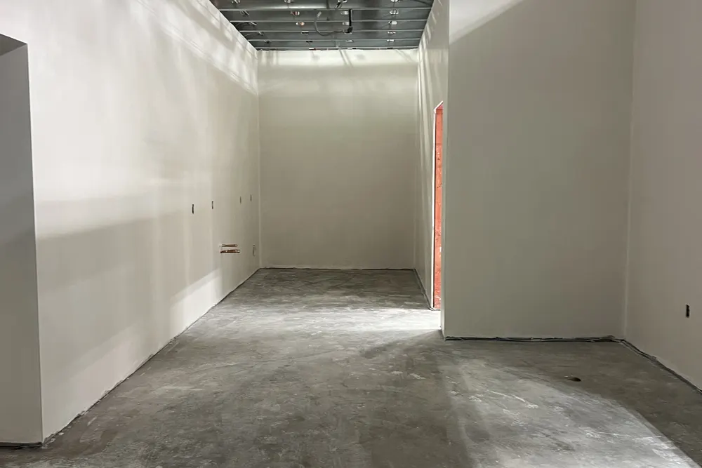
Permits and code
Commercial permits and the Massachusetts State Building Code
Commercial interior work in Massachusetts is regulated by the Massachusetts State Building Code (780 CMR). In practice that means:
- A building permit for new walls, ceilings, doors and layout changes.
- Separate electrical and plumbing permits, pulled by licensed trades.
- Fire department review for alarms, sprinklers and exits when they are affected.
- Accessibility rules from the Massachusetts Architectural Access Board (521 CMR) for spaces open to the public.
- Drawings stamped by a registered architect or engineer on many larger projects.
- A certificate of occupancy or final sign-off before customers come in.
Every town's building department has its own review time. We plan the permit path at the start, so the schedule is realistic from day one.
Staying open
Keeping your business running during the work
Many owners cannot close for weeks. When the space allows it, we phase the job so part of the business keeps operating:
- Dust barriers and floor protection between work and open areas.
- Loud or messy tasks scheduled before opening or after closing.
- Exits, walkways and restrooms kept clear and safe.
- Daily cleanup, so the space is presentable every morning.
- One point of contact for questions during the job.
Materials
Materials that hold up to commercial use
A commercial space sees more traffic in a month than most homes see in a year. We recommend materials for durability first, then looks:
- Impact-resistant drywall in corridors and storage areas.
- Commercial-grade doors and hardware.
- Scrubbable, washable paint in high-touch areas.
- Luxury vinyl, tile or sealed concrete floors.
- Solid wood or high-pressure laminate for counters and millwork.
- Suspended ceilings where access to systems above matters.
Typical spaces
Commercial spaces we see across the North Shore and Middlesex County
Our service area mixes older downtown buildings with newer business parks. In Lynn, Salem, Beverly and Peabody we often see storefronts and offices in older masonry buildings, where uneven floors, old plaster and tight access are part of the job. Along Route 1, Route 128 and the business parks of Middlesex County the spaces are usually larger, with open warehouse areas, steel framing and suspended ceilings.
Both types need a contractor who checks what is behind the walls before promising a price. That is why every estimate starts with a walkthrough, not a phone quote.
Common mistakes
Common mistakes in commercial remodeling
- Signing a lease before understanding the real cost of the build-out.
- Starting work before permits are issued, which can stop the job.
- Forgetting accessibility requirements until an inspector points them out.
- Choosing residential-grade materials for a high-traffic space.
- Not setting an opening date with enough room for inspections.
- Comparing bids that do not include the same scope.
A good estimate answers these questions before you sign anything.
Timeline
How long does a commercial build-out take?
A cosmetic refresh usually takes one to three weeks. Most office and retail fit-outs take four to ten weeks of construction, and restaurant work takes longer because of inspections and equipment. Permit review is separate and depends on the town and the size of the project.
The best time to call is before the lease is final, or at least as soon as you have the keys. Early planning is what makes an opening date realistic.
Reviews
What clients say about DeFaria Construction
DeFaria Construction has a 5.0 rating from 15 reviews on Google. See all reviews on Google.
Luiz has been doing construction for us for close to 20 years. Large jobs are small. He does excellent work and we’re always very pleased with it. His quotes are always very reasonable. I would highly recommend him.
Luiz has done many projects, from major renovations to minor repairs, for us in multiple homes over the last ten years. He and his company always do excellent and timely work. I would recommend him any time.
We used DeFaria Construction twice, once for a gut remodel of a condo unit and the other for a basement and garage upgrade. They are very professional, reasonably priced, do a great job, stick to their timelines and leave the work area totally clean at the end of every day. I highly recommend Luiz…
FAQ
Commercial remodeling questions
How much does a commercial remodel cost in Massachusetts?
It depends on the type of space and how much of the building systems change. A paint, flooring and lighting refresh can be as low as $10 to $30 per square foot, an office fit-out with new walls and ceilings often runs $45 to $120 per square foot, and a restaurant front of house can go well beyond that. You get a fixed, written price after the walkthrough.
What is a tenant fit-out or build-out?
It is the work that turns a leased shell or a previous tenant's space into a layout that fits your business: new walls and doors, ceilings, lighting, finishes, break rooms, restrooms and millwork. The landlord's lease usually spells out what the tenant pays for and what the landlord provides.
Do I need a permit for a commercial renovation in Massachusetts?
Almost always. New walls, ceilings, doors, electrical, plumbing and any change of use require permits under the Massachusetts State Building Code, and many projects also need fire department sign-off. Larger projects usually need drawings from a registered architect or engineer. We coordinate the permit path before work starts.
Can you work while my business stays open?
In many cases, yes. We phase the work, build dust barriers, schedule loud or messy tasks before or after business hours when the space allows it, and keep exits and walkways clear. The plan is agreed in writing before the first day on site.
How long does a commercial build-out take?
A cosmetic refresh can take one to three weeks. A typical office or retail fit-out takes about four to ten weeks of construction once permits are issued, and restaurants usually take longer because of inspections and equipment. Permit review time is separate and varies by town.
What types of commercial projects does DeFaria Construction take on?
Interior work for small and mid-size businesses: offices, retail stores, restaurant dining rooms, break rooms, warehouse offices and similar spaces. That includes framing, drywall, ceilings, doors, trim, custom carpentry and finishes, with licensed electricians and plumbers for their parts of the job.
Do you work with my architect or landlord?
Yes. Many commercial jobs come with drawings from an architect and rules from a landlord or property manager. We price from the drawings, follow the building's work rules and keep both sides informed as the job moves.
Is DeFaria Construction licensed and insured?
Yes. DeFaria Construction (DeFaria Carpentry, Inc.) is licensed and insured, BBB Accredited with an A+ rating, and every project is owner-led by Luiz DeFaria. Certificates of insurance are available for your landlord before work begins.
Who does the work
Commercial work led by the owner

DeFaria Construction is the trade name of DeFaria Carpentry, Inc., a Lynn-based, licensed and insured contractor incorporated in 2015 and BBB Accredited with an A+ rating. Luiz DeFaria leads every project personally.
One long-time client wrote on Google that Luiz has been doing construction for them for close to 20 years and that his quotes are always very reasonable. That is the relationship we want with business owners: clear numbers, honest scope and work you do not have to check twice.
Request a Free Estimate Call (617) 893-2221